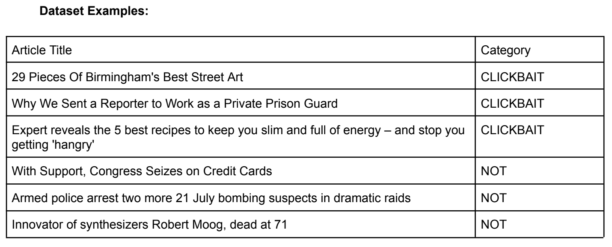

This was a two person project completed over the course of 3 weeks. Our clickbait detector is a Natural Language Processing (NLP) AI model that uses sentiment analysis methods to identify news articles with clickbait titles. This is done through a classification task, as the model labels the titles as clickbait or not clickbait. Clickbait is a term used to describe content which is designed in a way to motivate users to interact with it, often using eye-catching imagery or enticing and gossip-like headlines. Clickbait is an issue for several reasons. These articles tend to spread misinformation and mislead users into viewing them. Having an AI model that could identify clickbait would allow users to avoid clickbait content, thus saving them time and energy spent otherwise accidentally engaging with clickbait material, and also promote media literacy. We envision this model being used as a browser extension that could scan web pages and flag clickbait articles. This would be particularly useful on search engines like Google or websites like YouTube which have large quantities of content and complex algorithms, making it difficult for users to sift through. A full report on the project can be found here→.
The dataset we used→ was formed by merging several smaller datasets. It includes 37,870 titles in total, with 17,850 NOT clickbait texts and 20,020 CLICKBAIT texts. This dataset was ideal for this project because of its very large size, and it has been preprocessed by removing duplicate values. In order to make this dataset more balanced, we decided to remove 2170 CLICKBAIT items. This gives us a perfectly balanced amount of 17,850 items for each category (35,700 total).
Using a Pandas data frame and the Matplotlib library, we created graphs in Colab to show how our data was reduced. This results in no bias between clickbait and not-clickbait articles when training our model.
Below are a few examples of clickbait and not clickbait articles from the dataset.
There are some potential biases and privacy concerns with this data. Identifying what is clickbait and what is not is a subjective process, so inconsistency with how the data was labelled (especially since it came from combining multiple other datasets) may create bias. Clickbait titles also often have a certain structure or common language that they use, which could cause certain words to become biased even if used in a non-clickbait context. Considering that titles of articles must be publicly available in the first place to be assessed, we do not believe that using the article titles will create a privacy issue. However, article titles might be able to be traced back to the writer or publisher of the article, which could create some ethical issues when we are associating them with clickbait. As clickbait is a negative thing, being associated with it could have a negative effect on the authors. The concern around this is amplified by the risk of mislabeling articles, as the model would be making false accusations.
Our final model had 96.8% accuracy. While this is a pretty good score for the little training we did, a ~4% error rate is not good enough for this to be a real product. In the context of clickbait article titles, it is important to be as accurate as possible since we do not want to falsely accuse journalists of creating.
As the F1 score provides a mean between the precision and recall metrics, we can use it to see the impacts which false negatives and false positives have on our model’s performance. With an F1 score 96.7%, there is again a ~4% chance of a false positive or false negative. Looking at how this would impact the model in use, we believe that there would be more problems with false positives than false negatives. By inaccurately classifying an article as clickbait (false positive), we would be leading users away from the information they are seeking. On the other hand, false negatives would simply require a user’s own personal judgement upon reading the introduction of an article to see whether or not they are still interested in its contents.
After training and fine-tuning our BERT model for a clickbait classification task, we believe that releasing it as a real product at this stage would be unethical because of this subjectivity. This begs the question: is it possible to classify clickbait with complete certainty in an ethical way? We believe it would not be possible. The process of identifying clickbait will always be subjective, so any line we draw will be arbitrary. However, just because the difference is vague doesn’t mean that the distinction is impossible. We clearly know clickbait and not clickbait articles when we see them. In this sense, we imagine our clickbait detector would work best if it had some kind of threshold where it requires a very high level of certainty in order to flag something as clickbait. This would hopefully prevent incorrectly labelling non-clickbait as clickbait. As previously stated, having false negatives would be less catastrophic as users will simply need to use their own judgements on misinformation. We want to avoid this because it might falsely label a writer’s work as clickbait, affecting their reputation, and because it might deter the user from engaging with content that they might have wanted to actually see.
{kind=link}
{kind=link}